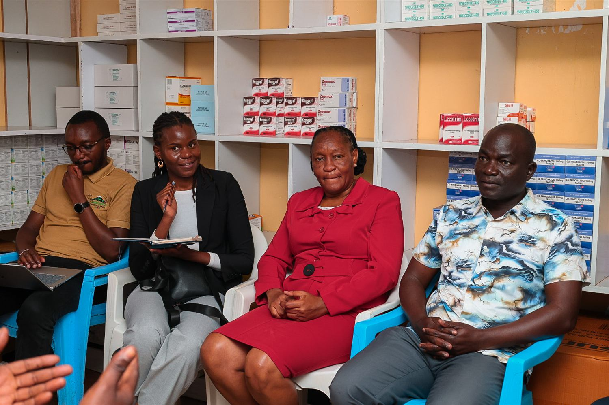
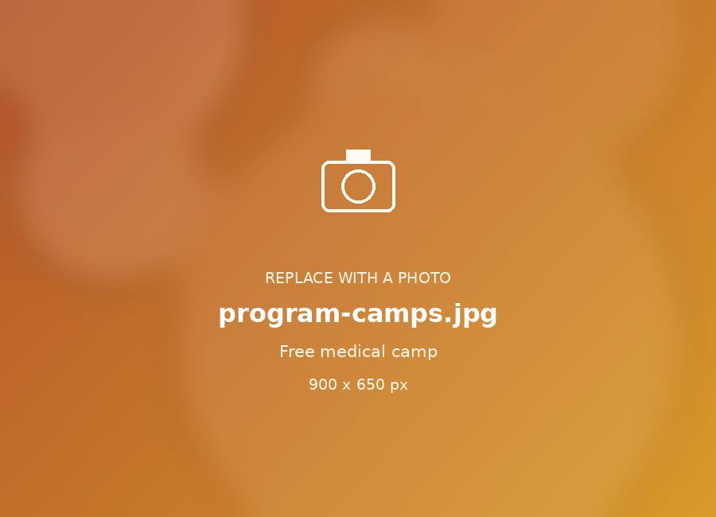
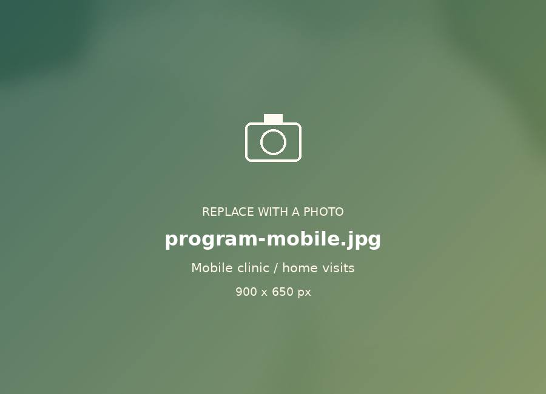
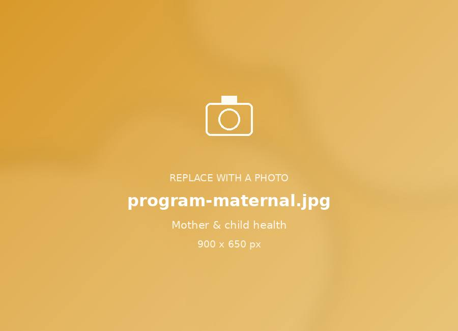
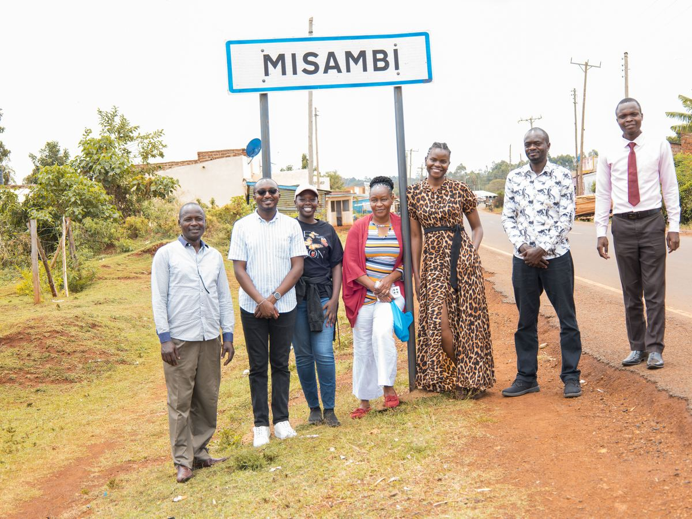
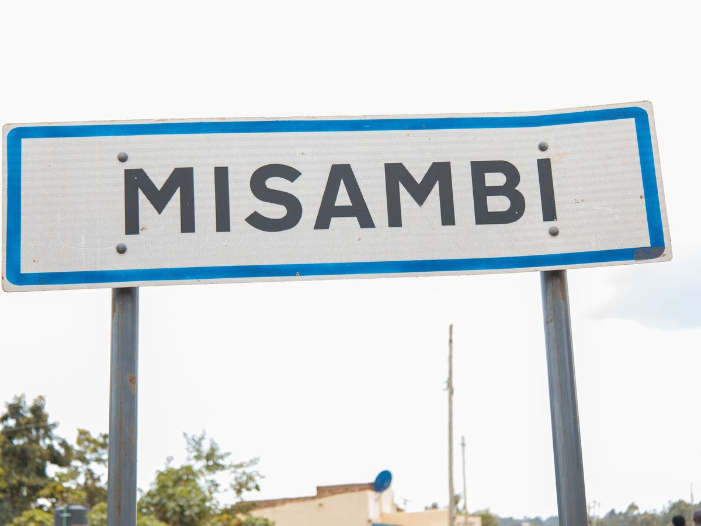
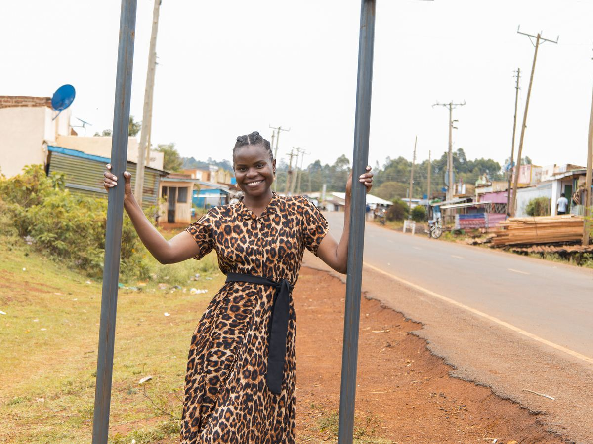
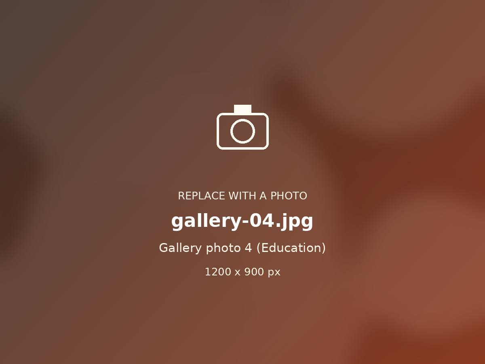

Bringing care closer to home
We take free medical camps, health education and follow-up care to families in Misambi village, Homa Bay County, and across the Nyanza region who live far from a hospital or cannot afford treatment.

Healthcare with dignity, delivered where people live
Misambi Medical Mission was founded in 2026 by Rev. Ezekiel Ondiek of Oriang' VOSH Church in Misambi Village, Homa Bay County. What began as a vision to care for members of the congregation will grow into a mission dedicated to improving the health and well-being of the wider community. Through our planned medical outreach programmes, we hope to bring essential healthcare services closer to people in underserved villages, schools, churches and surrounding communities. We envision building a dedicated team of doctors, nurses, clinical officers and volunteers who will work together to provide compassionate, accessible and affordable healthcare to those in need.
Our medical outreach programmes will aim to provide:
- Free medical consultations and essential medicines to individuals and families who may have limited access to healthcare.
- Health screenings for conditions such as high blood pressure, diabetes and eye-related problems
- Medical referrals and follow-up care for patients who require further assessment, treatment or specialised medical attention.
- Community health education to empower families with knowledge on disease prevention, hygiene, nutrition and healthy living.
Our First Medical Outreach
On 12th December 2026, Misambi Medical Mission will take an important step towards our vision by organising a community medical camp in Got Kamondi Dispensary, Rachuonyo East Sub-county,Homa Bay County. This outreach will mark the beginning of our commitment to bringing healthcare closer to the community, reaching those who need it most and building a healthier future for everyone. Our long-term hope is to establish a sustainable medical outreach programme that will continue serving communities through compassion, service and the belief that everyone deserves access to quality healthcare.

Free medical camps
Day-long outreach where our team sees patients, dispenses medicine and screens for common conditions.
Learn more
Mobile clinic & home visits
Reaching the elderly, the sick and families in remote areas who cannot travel to a health facility.
Learn more
Mother & child health
Antenatal check-ups, child growth monitoring, nutrition advice and support for young mothers.
Learn moreThere is a place for you in this mission
Whether you give, serve or partner with us, you help bring a doctor to someone who would otherwise go without.
Give
Your gift buys medicines, supplies and transport for our medical teams. Give easily through M-Pesa.
Volunteer
Medical or not, your time and skills are welcome at our camps: from consultations to registration and logistics.
Partner
Churches, businesses, hospitals and NGOs can host a camp, sponsor a program or donate supplies.
Moments from our outreach




Help us reach the next village
A single medical camp can serve hundreds of people in one day. Your support makes the next one possible.